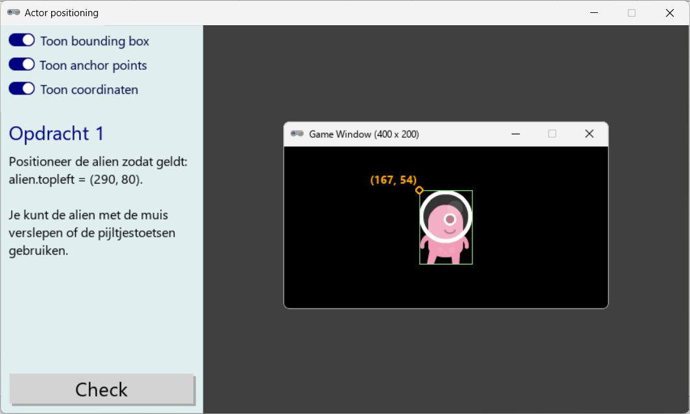

Actor positioneren#
Met het spelletje ‘Actor positioning’ kun je oefenen met het positioneren van een Actor ten opzichte van het game venster.

Game bestanden#
Download de zip folder (een gecomprimeerde map) met alle bestanden die je nodig hebt om het spel te spelen. In de zip folder bevindt zich een map actor positioning Plaats deze map in je eigen Games map. Open het bestand actor_positioning.py (dat zich in de map bevindt) in Mu editor en klik op Play.